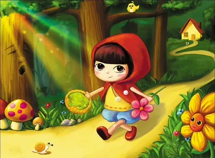

Bir bor ekan, bir yoʻq ekan, bir qishloqda jajjigina bir qizcha bor ekan: u dunyoda tengi yoʻq, juda yoqimtoy qiz ekan. Oyisi uni jonidan ham yaxshi koʻrar ekan, buvisi boʻlsa undan ham yaxshi koʻrar ekan. Buvisi nevarasining tugʻilgan kuni munosabati bilan qizchaga bitta qizil qalpoqcha sovgʻa qilibdi. Oʻshandan beri qizcha qayoqqa borsa, shu chiroyli, yangi qizil qalpoqchasini kiyib borar ekan. Shuning uchun qoʻni qoʻshnilar uni koʻrganda: — Ana, Qizil Qalpoqcha kelyapti! — der ekanlar. Bir kuni oyisi somsa pishirib, qizchaga aytibdi: — Qizil Qalpoqcha, mana bu somsa bilan kuvachadagi yogʻni buvingga oborib bergin, eson-omonligini bilib kelgin.Qizil Qalpoqcha kiyinib, buvisini koʻrgani narigi qishloqqa ketibdi.  U oʻrmondan oʻtayotsa, oldidan bir Boʻri chiqib qolibdi. Boʻri Qizil Qalpoqchani yamlab yuborgisi kelibdi-yu. lekin botinolmabdi, chunki shu yaqin orada oʻtinchilar daraxt kesib yurar, boltalarining taraq-turuq ovozi eshitilib turar ekan.Boʻri qizdan: — Qizil Qalpoqcha, qayoqqa ketyapsan? — deb soʻrabdi.